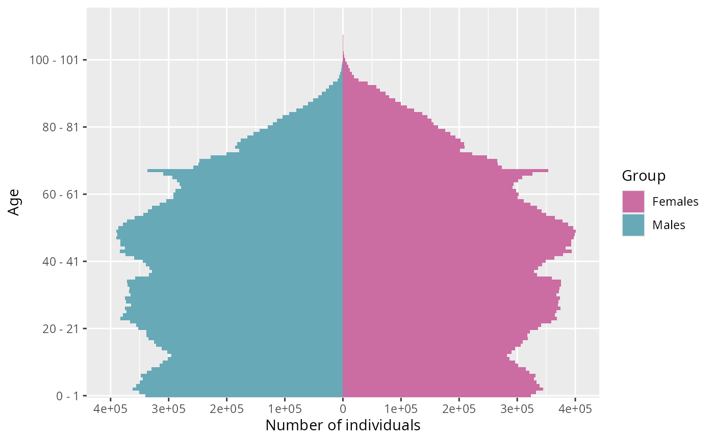

Plot an age pyramid from age pyramid data frame with possibly several characteristics.
Usage
# S3 method for pyramid
plot(
x,
group_colors = NULL,
group_legend = "Group",
age_breaks = NULL,
value_breaks = NULL,
...
)Arguments
- x
Object of class
pyramid.(Optional) For plotting an age pyramid composed of several subgroups, the population data frame must contain a column named
group_name.- group_colors
(Optional) Named character vector.
- group_legend
(Optional) Legend title name. By default set to
"Group".- age_breaks
(Optional) An ordered vector of indexes of vector
unique(pyr$age)used for breaks for the axis of ages.- value_breaks
(Optional) Breaks for the axis of values.
- ...
Additional parameters
Examples
plot.pyramid(subset(pyramid(EW_pop_14$age_pyramid), as.numeric(age) <= 110))

# \donttest{
library(colorspace)
pyr_IMD <- subset(pyramid(EW_popIMD_14$age_pyramid), as.numeric(age) <= 110)
pyr_IMD$group_name <- with(pyr_IMD, ifelse(male, paste('Males - IMD', IMD),
paste('Females - IMD', IMD)))
colors <- c(sequential_hcl(n=5, palette = "Magenta"),
sequential_hcl(n=5, palette = "Teal"))
names(colors) <- c(paste('Females - IMD', 1:5),
paste('Males - IMD', 1:5))
# note that you must have setequal(names(colors), pyr_IMD$group_name) is TRUE
plot.pyramid(pyr_IMD, colors)
# age pyramids at different times
library(gganimate)
#> Loading required package: ggplot2
pyrs = age_pyramids(population(EW_popIMD_14$sample), time = 1:10)
plot.pyramid(pyrs) + transition_time(time) + labs(title = "Time: {frame_time}")
# }